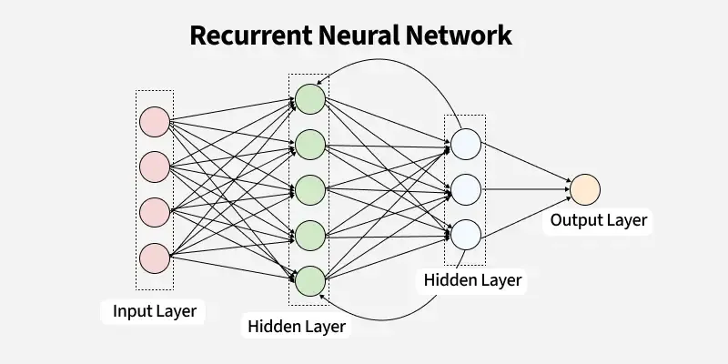
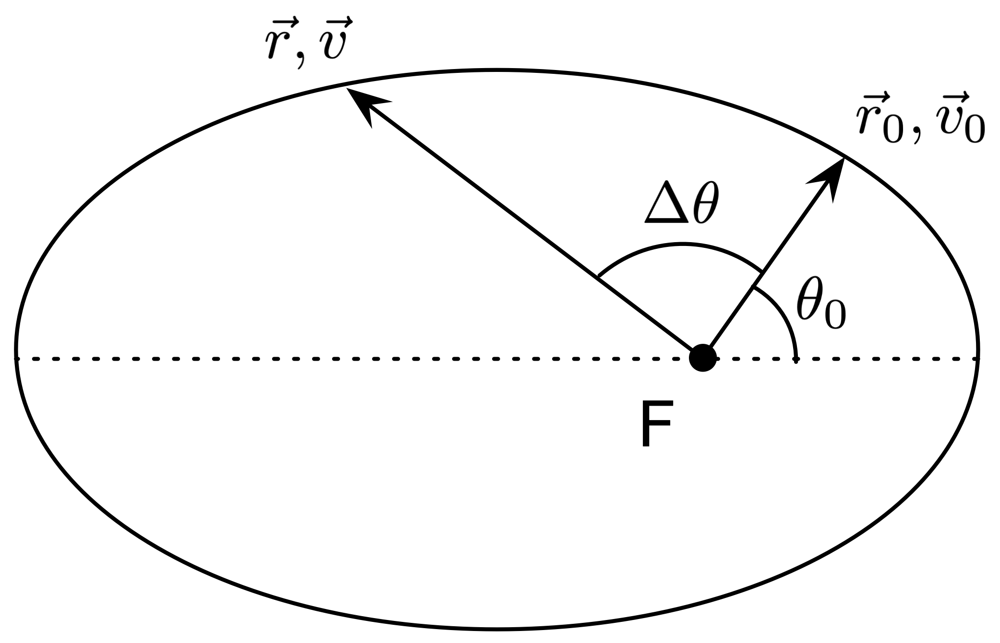
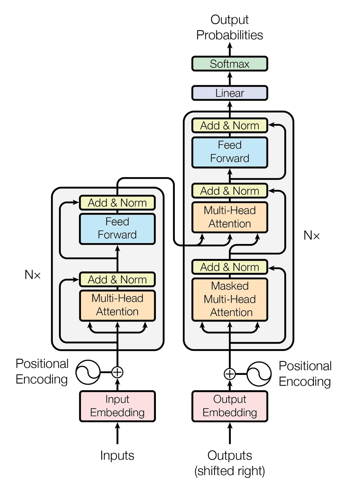

Anthony Jarjour
anthjar@csu.fullerton.eduI am a computer science student interested in mathematical physics, quantum field theory, differential geometry, and machine learning. This site collects my projects, research interests, and selected work.
CV
View or download my current curriculum vitae.
Research
Current work and research interests in theoretical and mathematical physics, theory of computation, and Riemannian geometry.
Current Research
- Quantum Field Theory
I am currently studying inequivalent Rindler vacua in Minkowski spacetime, focusing on Bogoliubov transformations between shifted Rindler frames and their implications for vacuum structure and thermodynamic interpretation. This work builds on Lochan and Padmanabhan's 2025 analysis of nested Rindler vacua and connects to broader questions in algebraic QFT, Green's functions, propagators, and quantum field theory in curved spacetime.
Presentations
- Bogoliubov Transformations Between Shifted Rindler Frames — Joint Mathematics Meetings, 2026
- Bogoliubov Transformations Between Shifted Rindler Frames — Math Research Symposium, 2025
Selected Projects
A selection of projects spanning computational physics, machine learning, and algorithm engineering.

Implemented an RNN based on K. He, X. Zhang, S. Ren, and J. Sun, ”Deep residual learning for image recognition,” arXiv preprint arXiv:1512.03385, 2015, and achieved 95% validation accuracy with 0.25 loss, on bird species images

Implemented Runge-Kutta integration to model N-body dynamics in a Newtonian gravitational system; visualized orbit evolution and field behavior.

Evaluated model output using unit tests to validate code correctness across multiple functional tasks, with a 93% pass rate.